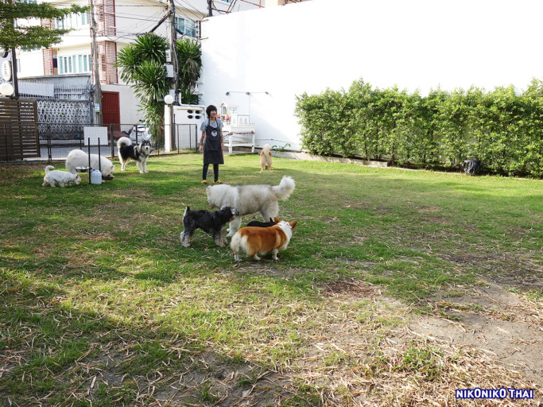
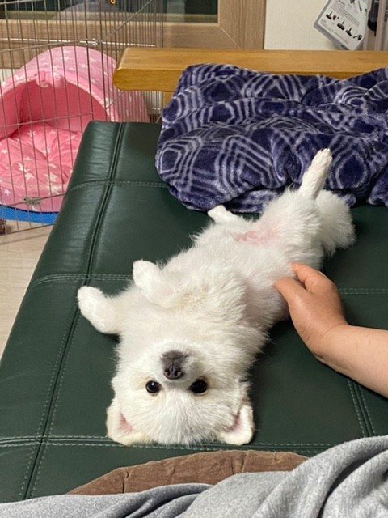
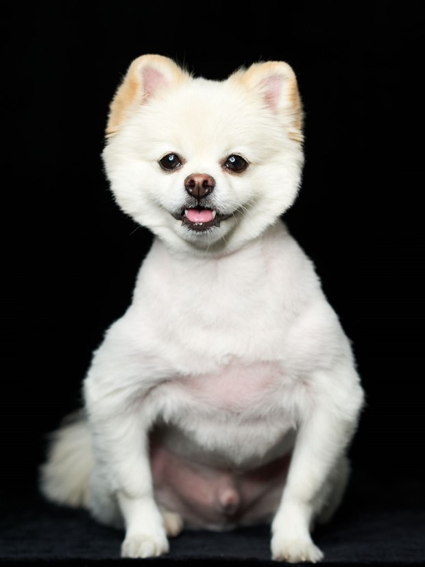
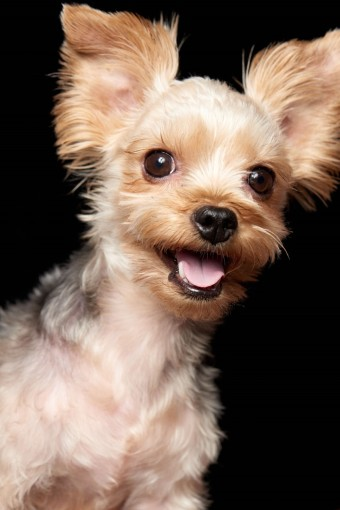
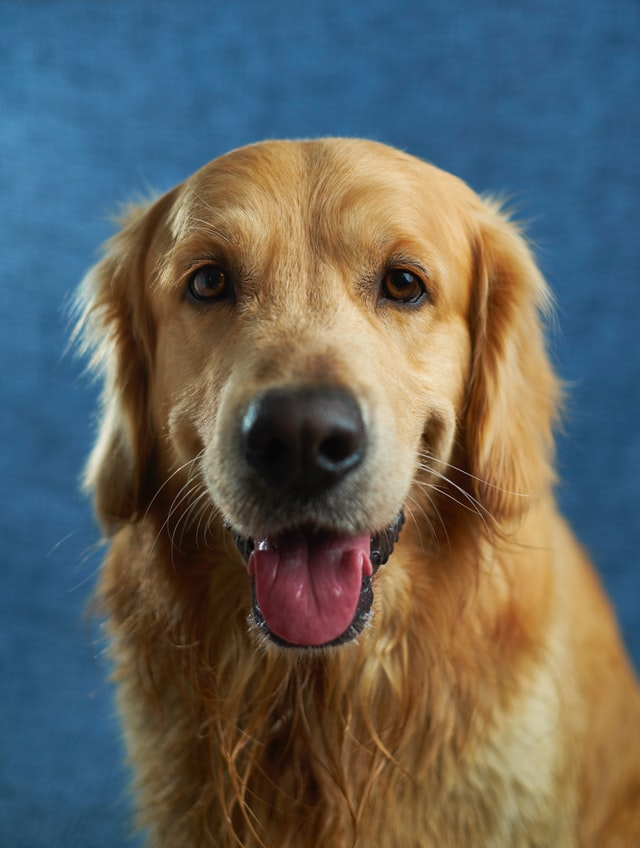

저희 보호소에서는
저희 보호소에서는 지속적인 발전을 통해 독일의 최대 규모인 유기견 보호소 'Tierheim' 의 운영을 기반으로 삼으며 운영중입니다.


저희 보호소에서는 아이들이 맘껏 뛰놀 수 있는 넓은 마당이 있습니다.
저희 보호소에서는 보호 명목으로 금전을 요구하는 일이 없으며 무료로 입소를 할 수 있습니다.


저희 보호소에서는 나의 반려 동물이 지내는 공간으로 생각하여 편안한 생활을 할 수 있도록 따듯한 보금자리가 되어주고 있습니다.
우리 보호소 장점

저희 보호소에서는 아이들의 특별 훈련과 특별 관리체계를 진행 하고 있습니다.
저희 보호소에서는 아이들의 건강을 위해 '로0캣0'회사의 고급 사료들만 배식합니다.

저희 보호소에서는 아이들의 건강을위해 의사 선생님께서 항시 대기중이십니다.
반려동물을 가족으로 생각하고 평생 함께할 각오와 책임만 다한다면 반려동물과 함께 하는 삶은 정서적으로 풍요롭고 행복할 수 있습니다.

click
Tierheim에서 구조/입소하여
보호중인 아이들 입니다.
사진을 클릭시 아이들의 간단한 정보가 기재되어있습니다.
강아지 보호 현황

행복이
나이: 3살추정
성별: 암컷(입양시 중성화 해드려요)
특징: 순하고 얌전하나 앙앙 깨물면서 노는 습관이 있습니다.
입소 전 물리 상처가 있어 치료차 털이 부분 밀려있습니다.(현재는 완치되어 털이 자라고 있는 중입니다.)
양슬개골이 있어서 관리가 필요하며 심해질 경우 수술이 필요할 수도 있습니다.

콩이
나이:2살 추정
체중: 5.7KG
성별: 남아(미중성/입양 전 중성화 해드립니다)
건강상태: 피부각질이 있습니다. 나이가 많지만 활동량이 좋고 건강해 보입니다. (입양 전 간단한 건강검진 해드립니다)
특징: 사람을 매우매우 좋아하며 애교가 많급니다. 산책을 무척 잘 합니다. 마킹을 하기 때문에 혹시 집 안에서도 하게 된다면 교육이 필요합니다.
질투가 있어 다견가정은 어려울 수 있습니다. 분리불안이 있어 교육이 필요합니다.

다비
나이: 9살 추정
성별: 여자아이(중성화 여부 알 수 없으나 원하실 경우 수술 해 드립니다.)
체중: 3.5KG
성격: 강아지들이랑 노는걸 엄청 좋아해서, 강아지가 있는 집에 갔으면 좋겠어요.
사람을 무척 무서워 하지만 조금씩 마음의 문을 열고 있어요.
호기심이 무척 많아요.
무척 조용해서, 조용한 걸 좋아하시는 분이 데려가시면 좋을 것 같아요.
특징: 산책을 좋아해요.

츄
나이:7살
성별: 여자아이(중성화 여부 알 수 없으나 원하실 경우 수술 해 드립니다.)
체중: 5KG
성격: 대소변 잘 가림, 산책 좋아함, 사람 좋아함, 미용 싫어함, 분리불안
츄츄는 사람을 무척 좋아하는 애교쟁이예요. 조금은 맹해보이지만 사실 훈련도 무척 빨리 배우는 똑똑이 예요.
츄츄는 사람이 없는것을 무서워 해 짖는 경우가 많아요. 그래서 사람이 오랫동안 같이 있는 집에 갔으면 좋겠어요^^
대소변은 따로 훈련하지 않아도 알아서 잘 가리고 산책도 무척이나 매너 좋게 잘 한답니다.

라떼
나이: 1살추정
성별: 남아(입양시 중성화 해드려요)
체중: 4.3kg
건강상태: 건강하며, 입양 시 기초 건강검진 해드립니다.
특징: 털이 매우 멋있는 포메입니다. 짖음으로 의사표현을 하는 편입니다. 강아지에 대한 호불호는 있으나, 싸우거나 물지는 않습니다. 체격이 큰 남자분에게 안좋은 기억이 있는듯 합니다. (공격하진 않으나 만지는걸 싫어합니다)

탱이
나이:8개월
성별:남아(입양시 중성화 해드려요)
체중:6.32KG
성격:탱이는 공놀이,인형놀이를 좋아하는 천진난만한 친구에요
영리하고 눈치가 빨라 배변교육이나 기본적인 훈련들은 어렵지 않게 해낼수 있습니다
탱이는 공격성이 적고 다른 친구들과 금방 친해지는 아이랍니다.
체력이 좋은 아이라서 산책을 자주 해주실수 있는 주인분을 기다리고있습니다.

대빵이
나이:2살
성별:여아(중성화 되어있음)
체중:14KG
성격:대빵이는 닭가슴살이랑 공원 놀러가는것을 너무너무 좋아해요
발만지는것과 정류장을 싫어해요 안좋은 기억이 있어서..
하지만 대빵이는 여성스럽고 온순하게 자기 어필을 하고 애교도 많아요
혼자있는것을 좋아하지 않아 주인과 함께 오래있는것을 좋아해요 ^^

순이
나이:5살
성별:남아(중성화 되어있음)
체중:30KG
성격:천사같은 미소를 가진 태식이는 사람과 간식을 무척 좋아하고 순한 성격을
가지고 있는 귀여운 아이인데요
낯가림이라고는 전혀 없이 관리사분들과 잘 어울리며 뛰어노는 태식이 랍니다 :)
고양이 보호 현황
고영희
나이:5살
성별:남아(중성화 되어있음)
체중:4.4KG
성격:다른 고양이 친구들보다 조금 예민한 친구입니다.
좋아하고 싫어하는것이 딱히 발견되지않아 함께살며 발견하면 좋을것같네요.
조금은 예민하지만 착한 고영희의 가족이 되어주실 분들을 기다리고있어요!!

리라
나이:4살
성별:여아(중성화 되어있음)
체중:3KG
성격:개냥이라는 단어가 가장 잘어울리는 친구랍니다.
장난감 놀이를 좋아하고 캣타워보다는 주인근처에 있는것을 좋아하는 아이랍니다.
길고양이로 지내다 구조된 아이라서 밖에나가는걸 좋아하지만 사라져버릴수있으니 조심해주셔야해요.

나비
나이:7살
성별:여아(중성화 되어있음)
체중:3.8KG
성격:도도함 그 자체 어찌보면 고귀해보이기까지한 나비 입니다.
혼자서 조용히 몸단장을하고 혼자 있는 시간을 더 좋아하는 아이랍니다.
그렇다고 주인분께 완전히 무심한것은 아니니 걱정 안하셔도 됩니다.
가끔 주인분께 와서 꾹국이라도 해주는순간.. 행복 그 자체!!

레오
나이:3살
체중:4.9KG
성별:여아(중성화 되어있음)
성격:밝고 천진난만하고 궁금한게 정말 많은 레오 입니다.
세상 모든것들이 궁금한 아이여서 이것저것 만지고 노는걸 좋아해요.
가끔 지나칠때도 있지만 궁금증이 많은 아이니 이해하고 기다려주시면 될거에요.
먹을것을 너무 좋아하기때문에 약간의 체중관리가 필요할수 있습니다.

루비
나이:4살
체중:3.5KG
성별:여아(중성화 되어있음)
성격:풍성하고 이쁜 털이 매력적인 루비 입니다.
털빠짐의 걱정이 있지만 그 걱정을 없애줄만큼 매력적인 비쥬얼을 지니고 있죠!!
모든 고양이들이 그렇겠지만 츄르를 많이 많이 좋아합니다.
좋아하는것을 주는것이 좋지만 과해지면 체중관리가 당연히 필요하겠지요?
구석진곳에서 쉬는것을 좋아하는 아이라서 집이나 켓타워를 구석진곳에 두시면 좋아할거에요!!

심바
나이:8개월
체중:1.7KG
성별:남아(입양시 중성화 해드려요)
성격:장난꾸러기 심바를 소개할게요 !!
나비모양 장난감을 좋아해서 어쩌면 하루종일 놀수있어요!!
날쌘돌이라서 놀아주실때 힘드실수있지만 같이 놀아주는게 좋아요!!
아직 어린친구지만 똑똑하기때문에 배변실수가 없어요!
모래를 약간 거칠게? 정리해서 먼지가 날수있기에 청소를 자주 해주셔야할수 있어요.

맥시
나이:3살
체중:3KG
성별:남아(중성화 되어있음)
성격:검은털의 매력이 뿜뿜하는 맥시를 소개할게요!
소심하고 겁이많고 낯가림이 심한 아이이지만
시간을 들여 낯가림이 사라지고 친해진다면 둘도 없는 귀여운 아이랍니다.
겁이 많아 좁고 어두운곳을 선호하는 아이라서 밤에 집에 불을 꺼두면 찾기 어려울수 있지만
시간을 갖고 기다려주시면 어느새 주인분 근처에서 자고있는 맥시를 보실수 있을거에요!!

크림이
나이:4살
체중:2.8KG
성별:여아(중성화 되어있음)
성격:크림같은색의 털과 부드러움을 가진 크림이를 소개할게요!
특별한 성격은 없지만 그것이 장점인 크림이 랍니다.
식사 시간에 경계심이 높아져 자칫하면 식사를 안할수 있어요.
하지만 체중증가가 필요한 아이여서 독립된 공간에 식사를 마련해주시고
잠시 다른일을 보시면 걱정안하셔도 될거에요!!
맨앞(안보임)

우리가족이 된지 일주일~
모든게 낯설어 가까이 다가오기 망설이지만
뒤를 졸졸 쫓아다니는 껌딱지가 되었습니다
멜론이의 변하는 모습 가끔 보여드릴게요~
앞으로 많은 시간을 함께할 사랑스러운
가족을 보내주셔서 감사드립니다
모든게 낯설어 가까이 다가오기 망설이지만
뒤를 졸졸 쫓아다니는 껌딱지가 되었습니다
멜론이의 변하는 모습 가끔 보여드릴게요~
앞으로 많은 시간을 함께할 사랑스러운
가족을 보내주셔서 감사드립니다
마블이 입양한지 벌써 한 달이 되었네요.
몸무게는 처음 왔을 때 4키로 좀 넘었는데
이제 6키로 넘는 것 같아요
이제 다음주에 5차 예방접종까지 마치면 산책도 자주 나갈 수 있을 것 같아요~
마블아 평생 행복하자!!
몸무게는 처음 왔을 때 4키로 좀 넘었는데
이제 6키로 넘는 것 같아요
이제 다음주에 5차 예방접종까지 마치면 산책도 자주 나갈 수 있을 것 같아요~
마블아 평생 행복하자!!

벌써 입양한지 1년이 지나가고 있네요
사랑스러운 반려견으로 변화하고 있습니다
산책가면 모두 강아지들과 인사 나누고
뛰어 놀기도 하고~~~
너무 사랑스러운 별입니다
사랑스러운 반려견으로 변화하고 있습니다
산책가면 모두 강아지들과 인사 나누고
뛰어 놀기도 하고~~~
너무 사랑스러운 별입니다

폰에 애들사진만 만장이 넘내요.
아주 오래된 거 같은데 이제 3년이라는게 이상할정도로 평생 함께해온 기분입니다 애들은 아주 잘 지내고 있어요.
분리불안이 더 심해지고, 사회성이 부족해 목줄 산책도 못하고, 아무리 좋은걸 먹여도 피부병도 자주생기고, 식단조절로 맘껏 못먹어 마니 슬퍼하지만,
그래도 사랑으로 키우고 있으니 행복하리라 생각됩니다.
내년에도 잘 지내는 소식으로 찾아올께요~
아주 오래된 거 같은데 이제 3년이라는게 이상할정도로 평생 함께해온 기분입니다 애들은 아주 잘 지내고 있어요.
분리불안이 더 심해지고, 사회성이 부족해 목줄 산책도 못하고, 아무리 좋은걸 먹여도 피부병도 자주생기고, 식단조절로 맘껏 못먹어 마니 슬퍼하지만,
그래도 사랑으로 키우고 있으니 행복하리라 생각됩니다.
내년에도 잘 지내는 소식으로 찾아올께요~

망덕이를 정식 입양한 지 3개월, 그리고 임보한 날로부턴 6개월이 흘렀어요.
6개월 간 망덕인 우리 가족 일원으로 존재감 뿜뿜하며 잘 지내고 있어요.
순둥순둥 발랄한 와중에,
잘 놀래고 소심한 쫄보의 본성도 감출 수 없고요,
점점 자기 ‘색깔’을 찾아가고 있다고나 할까요(?)
그동안 예방접종 2차 3차도 무사히 잘 했고 종합검진도 받았어요.
다행히 별 문제 없이 건강하다고 합니다.
잘 먹고 잘 자고 활발하게 노는 것에
늘 감사하게 되네요.

2020년 2월 1일 마론이와 크림이와의 첫만남
어느덧 함께한지 1주년을 맞았습니다~
1주년 생일기념 사진과 1월 초의 마론,크림이 사진을 올려봤어요~
동물자유연대 2021년 캘린더 9월 모델로도 선정된 마론이, 크림이는
모델들답게 사진도 예쁘게 잘 나온답니다~
어느덧 함께한지 1주년을 맞았습니다~
1주년 생일기념 사진과 1월 초의 마론,크림이 사진을 올려봤어요~
동물자유연대 2021년 캘린더 9월 모델로도 선정된 마론이, 크림이는
모델들답게 사진도 예쁘게 잘 나온답니다~

다온이 저희집에온지 3개월 되었네요.
다온이는 완벽하게 적응했습니다.
컨디션 최상상태라 기분이 매순간 업되어서
엄청 짖어대고 춤추고, 어른들말씀인용하자면,
6.25전쟁때 난리는 난리도 아니랍니다..
다온이 25세까지 가즈아~~~♡
다온이는 완벽하게 적응했습니다.
컨디션 최상상태라 기분이 매순간 업되어서
엄청 짖어대고 춤추고, 어른들말씀인용하자면,
6.25전쟁때 난리는 난리도 아니랍니다..
다온이 25세까지 가즈아~~~♡
또리가 우리 가족이 된지 벌써 1년이 지났네요.
맨 처음 만났을 때 겁도 많고,
사람에 대한 경계가 심했던 우리 또리가
지금은 가족들의 사랑을 듬뿍 받으며 많이 유순해졌답니다.
맨 처음 만났을 때 겁도 많고,
사람에 대한 경계가 심했던 우리 또리가
지금은 가족들의 사랑을 듬뿍 받으며 많이 유순해졌답니다.

안녕하세요. 금동이입니다.
금동이는 여전히 밥은 잘 먹고 잘 놀아요. 그런데 최근들어 약을 스스로 안먹어요.
약 피해서 밥만 먹어요. 그래서 강제로 약을 먹이는데 힘듭니다.
워낙 금동이가 영리해서 약을 먹이려고 안아주면 눈치가 빤해요.
처음엔 억지로 먹일때 너무 힘들었어요. 점점 요령이 생겼지만, 그래도 금동이가 스스로 먹어주는게 자신도 제일 편할꺼에요.
금동이는 며칠전 기침이 너무 심해서 입원했었습니다. 물론 지금은 집에 왔어요^^

우리 아가 정왕이가 저희 가족이 된지 벌써 만 5년의 세월이 지났어요!
그 사이 저의 사진첩 주인공은 저희 아가가 되었네요~
주말마다 공원으로 숲으로 다니는 취미도 아가 때문에 생겼어요^^
우리 아가는 숲에 쌓인 낙엽 밟는 걸 가장 좋아한다는 것도 알았지요.

아기때와서 성묘가 된 꽁치입니다.
살도 찌고 덩치도 커지고 목소리도 제법 힘이 들었어요.
코로나때문에 온종일 식구들과 같이하는 시간이 많아서 그런지 올해는 꽁치와 대화를 많이 했네요^^
살도 찌고 덩치도 커지고 목소리도 제법 힘이 들었어요.
코로나때문에 온종일 식구들과 같이하는 시간이 많아서 그런지 올해는 꽁치와 대화를 많이 했네요^^

처음 낯선 집에 오면 좀 불안해 하지 않을까 했는데
딱 한 번 본 걸로 어찌 그리 친한척을 해 대던지...
장난감 갖고 놀 때나 간식 먹을 때나
꼭 사람한테 붙어 있으려 합니다.
아직 예방접종이 끝나지 않아서
제대로 된 산책을 못 나가고 있는데,
밖에 나가고 싶은지 심심하면 베란다로 나가서 창 밖을 구경하네요.
딱 한 번 본 걸로 어찌 그리 친한척을 해 대던지...
장난감 갖고 놀 때나 간식 먹을 때나
꼭 사람한테 붙어 있으려 합니다.
아직 예방접종이 끝나지 않아서
제대로 된 산책을 못 나가고 있는데,
밖에 나가고 싶은지 심심하면 베란다로 나가서 창 밖을 구경하네요.
맨뒤(안보임)
오시는길
주 소 사랑시 고백구 행복동
자가용으로 오시는 길
국민시 후원구 계좌동을 지나 바로 나오는 사랑시 고백구 행복동 Tierheim
대중교통을 이용하여 오시는 길
사랑역에서 행복동 방향으로 가는 486버스 승차 후 Tierheim 정류장 하차